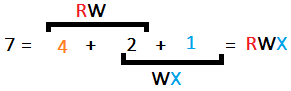

PHP2: TP2( stockage sur session, cookies, fichier.txt )
Rappels: Session vs Cookie
-
Session
∎ @: Les variables sessions sont dans un fichier sur le serveur
∎ Durée de stockage: pendant toute la durée d’une connexion
∎ Portée: $_SESSION[ ] est une variable globale
∎ Usage: Échanger les informations d’une page à l’autre
-
Cookie
∎ @: Un cookie est un fichier sur le disque dur du post client.
C'est le browser client qui gère l'emplacement de stockage
∎ Durée: À ma guise(données disponibles même hors connexion)
∎ Portée: $_COOKIE[ ] est une variable locale(cf conséquence - TP2/note1.j)
∎ Usage: Espionner l'internaute(ses habitudes de navigation)
-
Comment définir un cookie?
setcookie(nom, valeur, durée);
Comment définir sa durée(date d'expiration)?
Une heure: 60s * 60 mn = 3600s Une journée: 3600s * 24 = 86400s Une semaine: 86400 * 7 Un mois: 86400 * 30
Expliquer les paramètres
∎ 7 parmètres.
∎ 3 sont obligatoires: nom, valeur, durée;
∎ Les autres sont à false ou null, sauf le dernier ( httpOnly )
∎ Ce dernier, exclu les language de script. Ce qui protège des attaques XSS.
Nota bene:- setcookie() défini 1 seul cookie et s'écrit avant tout code HTML
- sous chrome on peut voir l'etat des cookie avec la touche Ctrl+Shift+J
① La fonction setcookie('clef', "valeur", durée);
Dans corps.php, enregistrer sur cookies les données saisie au formulaire:
② La boucle while(condition){ instructions; itération; }
Afficher le contenu des cookies dans une autre page PHP (cookies.php)
③ L'opérateur ternaire
Dans cookies.php, modifier la valeur du prénom dans le cookie :
Dans corps.php, modifier la valeur du nom dans le cookie :
④ La commande shmod user|groupe|other fichier
Ajouter un répartoire ad hoc, pour les fichiers .txt :
⚠ Sous MS Windows, intaller git bash
⚠ i fo retenir ce truc:
Dans corps.php, enregistrer sur cookies les données saisie au formulaire:
- nom
- prénom
- phrase
Réponses ...
/******** form.php ******/
<form action="corps.php" method="get" >
Nom :<input type="text" name="nom" >
Prénom:<input type="text" name="prenom" >
Password:<input type="password" name="password" >
Punition:<input type="text" name="punition">
nbFois:<input type="number" name="nbFois" value="10">
<input type="submit" name="submit" value="Envoyer">
<form>
/******** corps.php ******/
$nom = isset($_GET["nom"]) ? $_GET["nom"] : '';
setcookie( 'nom', $nom, time()+86400*7 ); // 1jours
$prenom = isset($_GET["prenom"]) ? $_GET["prenom"] : '';
setcookie( 'prenom', $prenom, time()+3600*24*7 );//1 semaine
$password= isset($_GET["password"]) ? $_GET["password"] : '';
setcookie( 'pass', $password, time()+86400*7 );//une semaine
$punition=isset($_GET["punition"]) ? $_GET["punition"] : '';
setcookie( 'punition', $punition, time()+86400*1 );//1jour
$nbFois=isset($_GET["nbFois"]) ? (int) $_GET["nbFois"] : '';
setcookie( 'nbFois', $nbFois, time()+86400*7 );
Afficher le contenu des cookies dans une autre page PHP (cookies.php)
- Le "nbFois" doit être un entier
- Utiliser une boucle while
- Tester aussi avec une boucle for
- Utiliser un bouton pour afficher le résultat
Réponses (avec while)
/******** cookies.php ******/
<?php
$nom = isset($_COOKIE['nom']) ? $_COOKIE['nom'] : '';
$prenom = isset($_COOKIE['prenom']) ? $_COOKIE['prenom'] : '';
$pass = isset($_COOKIE['pass']) ? $_COOKIE['pass'] : '';
$nbFois = isset($_COOKIE['nbFois']) ? (int)$_COOKIE['nbFois'] : '';
$punition = isset($_COOKIE['punition']) ? $_COOKIE['punition'] : '';
if( isset($_COOKIE['nom']) && !empty($_COOKIE['nom']) ){
echo '
COOKIE Nom:'.$nom.'<br>
COOKIE Prénom:'.$prenom.'<br>
COOKIE Password:'.$pass.'<br>
COOKIE Punition:<br>';
// while( condition ) { instructions; itérations; }
$n = 1;
while ($n <= $nbFois)
{
if($nbFois <= 100 ){
echo $punition.'<br>';
}else{
echo 'Nombre trop grand <br>';
break;
}
$n++;
}
}';
?>
Test (avec for)
<?php
// for( itération ) { instructions; }
$nbFois = 100;
for( $i=0; $i <= $nbFois; $i++ ){
echo $punition.'<br/>';
}
?>
Appel page d'affichage (cookies.php)
/******** corps.php ******/
<button onclick="window.location.href='cookies.php';">
Afficher les cookies
</button>
Dans cookies.php, modifier la valeur du prénom dans le cookie :
- Mettre Emilie à la place du "Prénom" saisi par l'internaute.
- La saisie utilisateur( sur le champs Prénom) sera donc ignorée!
Réponses ...
/******** cookies.php ******/
$prenom = isset($_COOKIE['prenom']) ? "Emilie" : '';
- Mettre Joseph à la place du "Nom" saisi par l'internaute.
- La saisie utilisateur( sur le champs Nom) sera donc ignorée!
- Attention! je l'ai fait dans corps.php( Or Isis le veut dans cookies.php)
Réponses ...
/******** corps.php ******/
$nom = isset($_GET["nom"]) ? $_GET["nom"] : '';
setcookie('nom', "Joseph", time()+3600*24*7);
Ajouter un répartoire ad hoc, pour les fichiers .txt :
- Mettre le répertoire en mode X pour other
- Mettre son contenu(fichiers.txt) en mode RW pour other
Réponse: Définition droit d'accès aux fichiers
⚠ Sous MS Windows, intaller git bash
⚠ i fo retenir ce truc:

Réponse: Application à l'exo
Le répertoire en mode X(other): chmod 771 nomInternaute Les fichiers en mode RW(other): chmod 776 nomInternaute/*.txt
① Stockage ligne par ligne
Reprendre le fichier corps.php | en faisant une copie corpsFic.php
② Stockage dernier enregistrement
Reprendre le fichier corpsFic.php | en faisant une copie corpsFic2.php
Reprendre le fichier corps.php | en faisant une copie corpsFic.php
- Enregistrer les noms et prenoms dans le fihier nomInternaute.txt
- Chaque couple doit occuper une ligne
- Séparer le couple par un virgule
Réponses ...
$nom = isset( $_GET["nom"] )?$_GET["nom"] : ' ' ;
$prenom = isset( $_GET["prenom"] )?$_GET["prenom"] : ' ' ;
$fichier=fopen("nomInternautes.txt","a+");
$ligne = $nom .", ".$prenom ."\r\n";
echo fwrite($fichier, $ligne);
fclose($fichier);
Reprendre le fichier corpsFic.php | en faisant une copie corpsFic2.php
- Modifier la façon de sauvegarder chaque couple (nom, prenom)
- Il faut à chaque fois écraser l’ancien couple
- ⚠ Indication: i suffit de placer le pointeur en début de fichier !
Réponses ...
$fichier=fopen("nomInternautes.txt","w+");
① HTML: Saisie ( interface d'entrée )
Ajouter une page formulaire.php contenant:
② PHP: Traitement ( fichier externe )
Ajouter la page pageProtegee.php qui,
③ HTML/PHP: Saisie et traitement ( dans le même fichier )
Reprendre la page formulaire.php :
④ Conclusion:
Ajouter une page formulaire.php contenant:
- Un titre
- Un formulaire avec un champs "mot de passe" et un champs "Accéder"
- Le champs "Accéder" appelle la page pageProtegee.php(par POST)
Réponses ...
/******** formulaire.php ******/
<!DOCTYPE html>
<html>
<head>
<title>TP2: Exercice3</title>
</head>
<body>
<form action="pageProtege.php" method="post">
Password: <input type="password" name="password">
<input type="submit" name="submit" value="Acéder">
</form>
</body>
</html>
Ajouter la page pageProtegee.php qui,
- affiche un texte si le mot d'passe est correcte
- affiche un message d'erreur le cas échéant
Réponses ...
/******** pageProtege.php ******/
<div id="contenu">
<h3> TP2: Exercice3</h3>
</div>
<?php
// COLLECT
$motdepasse = 'abc';
$password=isset($_POST["password"]) ? $_POST["password"]:'';
// CONTRÔLE DE SAISIE
if(empty($password)) echo 'Entrer votre password<br>';
// AFFICHAGE
$resultat = strcmp($motdepasse,$password);
if ($resultat !== 0) echo 'mot de passe erroné';
else echo 'le cheval de Henti Iv était blanc';
?>
<p><a href="formulaire.php"> Formulaire de saisie </a></p>
Reprendre la page formulaire.php :
- Dedans, insérer le contenu de la page pageProtegee.php
- Le formulaire pointe donc sur lui-même
Réponses ...
/******** formulaire.php ******/
<!DOCTYPE html>
<html>
<head>
<title>TP2: Exercice3</title>
</head>
<body>
<form action="pageProtege.php" method="post">
Password: <input type="password" name="password">
<input type="submit" name="submit" value="Acéder">
</form>
</body>
</html>
<?php
$motdepasse = 'abc';
if(isset($_POST["password"]) && !empty($_POST["password"])){
// COLLECTE
$password = $_POST["password"];
// AFFICHAGE
$resultat = strcmp($motdepasse,$password);
if ($resultat !== 0) echo 'mot de passe erroné';
else echo 'le cheval de Henti Iv était blanc';
}
?>
-
Traitement dans le même fichier :
Pour eviter les erreurs "Notice indefined variable":
Mettre tout le code à l'interieur d'une grosse boucle if qui teste la variable réçue, en utilisant isset() et !empty() -
Traitement dans un autre fichier :
On peut éviter ces erreurs sans se taper la grosse boucle. i suffit d'utiliser l'opérateur ternaire pour insptecter les variable :
$variable = isset($_POST["name"]) ? $_POST["name"] : '';